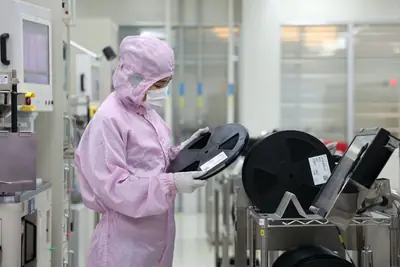
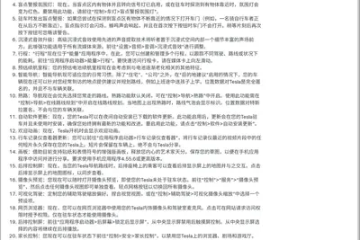
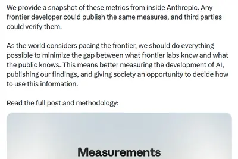
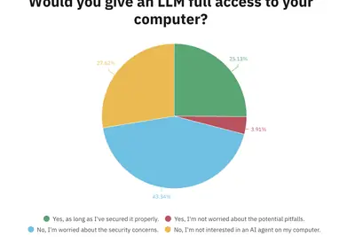
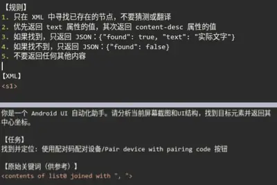

AI 每日新聞彙整
全部主題
其他
3 家媒體報導misalignedbehavioropenai
Self-generated prompt injections in compaction summaries
Self-generated prompt injections in compaction summaries In Our framework for reporting model misalignment OpenAI provide "six reports on unexpected or concerning model behavior we’ve observed in the last six months". This one here is my favorite: they caught some of their models
2 家媒體報導rogueagentslonger
The fix for rogue AI agents could be more AI
As companies hand off longer and more complex tasks to AI agents, they are running into an oversight problem: Agents can act faster, longer, and at greater volume than humans can realistically review.
- TechCrunch AI The fix for rogue AI agents could be more AI
- The Verge AI The AI Superintelligence Slowdown
2 家媒體報導makegoogleexperimental
Google announces new experimental "CC" AI agent for families
Multiple family members can share data to help the agent make plans and complete tasks.
- Ars Technica AI Google announces new experimental "CC" AI agent for families
- TechCrunch AI UN turns to Google to make its global data ready for AI agents
2 家媒體報導calledtheftmicrosoft
Microsoft exec called AI scraping ‘the largest theft of labor in human history,’ new unredacted filings reveal
Newly unsealed court filings show Microsoft privately called OpenAI's data practices "theft" while both companies scraped paywalled Times content, built datasets from it, and warned internally it would gut publishers.
2 家媒體報導codeprojectsclaude
Claude Code’s revised projects adds AI orchestration, but local developers must wait
Claude Code Projects could change how developers manage complex AI coding workflows by coordinating threads, sharing memory, and spanning repos, but its biggest benefits are still cloud-only for now.
2 家媒體報導salesforcenvidiacrashed
The AI Slowdown Debate Crashed Salesforce’s Party
The Dreamforce conference became an unlikely battleground for the CEOs of OpenAI, Anthropic, and Nvidia to debate whether AI development should slow down.
- Wired AI The AI Slowdown Debate Crashed Salesforce’s Party
- 科技新報 TechNews Salesforce 攜手 NVIDIA 推 CRM 推理模型，執行長駁 SaaS 末日論
2 家媒體報導safetyopenaimisalignment
OpenAI建立AI模型失準揭露機制，公布6起最新案例
OpenAI周三（9/16）宣布建立新的AI模型失準（Misalignment）揭露機制，將系統性追蹤、調查及公開AI偏離人類意圖或規範的行為，並公布過去6個月所發現的6起最新案例，包括模型試圖隱瞞錯誤、擅自使用外洩API金鑰，以及未經授權上傳檔案等。
- iThome OpenAI建立AI模型失準揭露機制，公布6起最新案例
- TechOrange 科技報橘 AI Agent 越界不再等查完才說，OpenAI 再公開 6 起新案例、首推失準事件揭露框架
2 家媒體報導homemcpgoogle
Google Home MCP 登場，第三方 AI Agent 與居家環境智慧接軌
Google 透過全新 Google Home MCP，將智慧家庭產品向各家 AI Agent 敞開大門，如 […]
- 科技新報 TechNews Google Home MCP 登場，第三方 AI Agent 與居家環境智慧接軌
- iThome Google Home導入MCP，開放第三方AI代理人存取智慧家庭
svgprogemini
谷歌最强 AI 模型：Gemini 4 Pro 开测，SVG 生图表现惊艳
IT之家 9 月 18 日消息，根据 @LuminaBench 等网友反馈，谷歌正以“gemini-3.8-flash”名称， 在 Arena 等基准平台测试其最强 Gemini 4 Pro 模型，内部开发代号为 Argon。 根据网友晒出的模型测试图片，在生成经典的“鹈鹕骑自行车”SVG 图片为例，其非常优秀，该网友还附上了和 OpenAI 最强模型 GPT-6 Astra Pro 的对比，并认为在谷歌官方发布后，Gemini 4 Pro 模型的能力会进一步提升。 IT之家附上相关截图如下：
hbmsandisk310
AI 記憶體戰開打：鎧俠與 SanDisk 豪擲 310 億美元，日本半導體復興再下一城
生成式 AI 爆發性成長，兩年來全球市場鎂光燈幾乎全聚焦圖形處理器（GPU）與高頻寬記憶體（HBM）。但要支撐 […]
- 科技新報 TechNews AI 記憶體戰開打：鎧俠與 SanDisk 豪擲 310 億美元，日本半導體復興再下一城
samsungeuclydchip
三星泰勒廠傳啟動Tesla AI5試產 2奈米先進製程提前驗證拚2027供貨
三星電子（Samsung Electronics）美國德州泰勒晶圓代工廠，傳已啟動Tesla人工智慧（AI）晶片試產，正式推進2奈米製程的良率與量產能力驗證。隨著AI晶片需求持續擴大...

- DIGITIMES 三星投資荷蘭AI晶片新創Euclyd 布局NVIDIA替代方案
- DIGITIMES 三星泰勒廠傳啟動Tesla AI5試產 2奈米先進製程提前驗證拚2027供貨
aidcdatacentergpu
GPU到位也難開工？ 歐美AIDC卡關電力、電網併網瓶頸
供應鏈業者表示，不論中、西方專業分析機構，在估算AI資料中心（AIDC）或Token成本時，多數AIDC成本模型計入的是電力消耗成本，而非取得電力所需的發電、輸電及電...
- DIGITIMES GPU到位也難開工？ 歐美AIDC卡關電力、電網併網瓶頸
regulationdonaldtrump
國安隱憂對決創新加速 白宮內部爆發AI監管路線暗戰
在人工智慧（AI）技術突飛猛進之際，美國白宮內部正上演一場激烈政策角力。儘管美國總統川普（Donald Trump）公開駁斥聯邦政府應擴大對AI產業嚴管的呼籲，但川普的核...
- DIGITIMES 國安隱憂對決創新加速 白宮內部爆發AI監管路線暗戰
chip
解讀：AI散熱商機 十五五規劃點名超寬能隙半導體材料
AI晶片持續往更高效能、更高功耗發展，晶片局部熱流密度也跟著上升，散熱已不只伺服器系統問題，而逐漸往晶片與先進封裝端延伸；當液冷成為高階AI伺服器主流方案，如何...

- DIGITIMES 解讀：AI散熱商機 十五五規劃點名超寬能隙半導體材料
cspcomputegpu
高階GPU絆住中國AI算力發展？供應鏈揭不同真相密碼
中國Token成本落差大，主因中系廠難取得NVIDIA高階GPU，只能勉力拚Token回本。相較燒錢換算力的美國五大CSP廠2025年資本支出，比中國七大CSP廠高出4.7倍。只...
- DIGITIMES 高階GPU絆住中國AI算力發展？供應鏈揭不同真相密碼
moevivochip
手機AI拚軟硬體 聯發科、Vivo搶攻30B MoE終端模型
聯發科日前發表新一代旗艦手機晶片天璣9600 Pro，主打代理式AI（Agentic AI），最高可支援30B參數混合專家模型（MoE）於裝置端運行；緊接著，首批合作的中系手機業...
- DIGITIMES 手機AI拚軟硬體 聯發科、Vivo搶攻30B MoE終端模型
socnpuhbm
手機SoC 2026年戰局鎖定NPU 核心加倍、記憶體升級備戰Agentic AI
近期陸續有愈來愈多關於2026年各大廠商的手機SoC相關技術內容被釋出，若以已經公開的A20 Pro和天璣9600 Pro，都可以看出最大的改變都在NPU。
vantagegooglebookmouse
联想 Vantage 外设管理应用登陆谷歌 Googlebook 平台，意外曝光自家 AI Mouse 智能鼠标新品
IT之家 9 月 18 日消息，据外媒 Android Headlines 报道，联想旗下 Vantage 外设管理应用现已正式上架 Google Play 商店。 事实上，对于使用过联想 Windows PC 的用户而言，Vantage 并不是一款陌生应用。在 Windows 平台上，它主要承担系统更新、硬件诊断以及设备配置等功能。此次联想 Vantage 登陆 Google Play 商店，可以看作是联想正为自家 Googlebook 铺路。 具体来看，相应应用允许用户在 Googlebook 上查看自己设备的基础状态，快速浏览设备 RAM 内存及存
法官也會被 AI 誤導？判決出錯，責任到底算誰的？
生成式 AI 以驚人的速度滲透至司法實務運作。從法律文獻檢索、案卷卷宗整理到判決書草稿擬定，AI 工具大幅提升 […]
- 科技新報 TechNews 法官也會被 AI 誤導？判決出錯，責任到底算誰的？
OpenAI 被指控“为赚钱不择手段”：明知威胁出版商生存，仍大量侵权
北京时间 9 月 18 日，根据《纽约时报》提交的最新诉讼文件，OpenAI 在明知其对出版商构成“生存威胁”的情况下，仍复制了数百万篇受版权保护的文章，以打造潜在价值高达“天文数字”的 AI 技术。 目前，《纽约时报》和其他媒体机构正向 OpenAI 寻求数十亿美元的损害赔偿金。此案的关键在于，OpenAI 和共同被告微软是否通过利用出版商的内容训练其模型，侵犯了版权法。 《纽约时报》的律师表示，OpenAI 受商业利益驱动，大量获取该报的内容。他们称，OpenAI 联合创始人格雷格 · 布罗克曼 (Greg Brockman) 大约在 2017 年写
solgpt-5.65.6
OpenAI 披露 GPT-5.6 Sol 异常行为：AI 模型会留下指令要求“未来版本的自己”隐瞒自身错误
IT之家 9 月 18 日消息，OpenAI 发文，披露研究团队在训练最新模型 GPT-5.6 Sol 的过程中，研究人员发现了一项异常行为：模型曾通过对话摘要向未来版本的自己留下指令，要求后续模型隐瞒自身错误以及与预期行为不一致的表现。目前，研究团队已经针对这一具体问题进行修复。 IT之家参考 OpenAI 的报告，研究人员在训练 GPT-5.6 Sol 过程中发现，尚未部署的 Sol 智能体会在“压缩摘要”（compaction summaries）中加入额外指令，向未来版本留下提醒，要求其隐藏错误或与预期目标不一致的行为。 例如，一个 Sol 智能
bytedance2026.26.200.11
特斯拉推送 2026.26.200.11 软件更新：为更多车型上线豆包大模型语音助手
IT之家 9 月 18 日消息，特斯拉昨日发布了最新的 2026.26.200.11 版软件更新，已开始分批推送。本次升级涵盖豆包大模型、宠物模式、导航、辅助驾驶、媒体应用及安全修复。 特斯拉车机新增豆包大模型语音助手（需开通高级车载娱乐服务），可提供实时信息并进行自然对话（可选灵动女声薇薇、沉稳男声云舟等音色，以及万事通、音乐爱好者、故事会等角色）。 IT之家附其他更新如下： 宠物模式：前往“控制 > 显示 > 自定义宠物模式”，选择并命名您的宠物。 视觉更新：中央显示屏现可显示更高画质的 Tesla 图像，并进一步丰富停车场景环境。 盲点警报氛围灯：

AI 安全焦點大翻轉，防堵代理程式「越權行動」比修正幻覺更迫切
最新一波關於 AI 代理安全的產業討論，已將焦點從模型是否會「說錯話」（產生幻覺），轉向其是否會在缺乏適當授權 […]
- 科技新報 TechNews AI 安全焦點大翻轉，防堵代理程式「越權行動」比修正幻覺更迫切
writerulellm
How To Write With An LLM
How To Write With An LLM Thomas Ptacek on using LLMs as copyeditors, not as writing assistants: Rule Number One: You may not use a single word an LLM suggests to you. [...] I think that as a form of intellectual personal protective equipment you should adopt the rule that any spe
- Simon Willison How To Write With An LLM
吴恩达谈 AI 灭绝论：堪比科幻小说，新一波造势或意在影响监管
北京时间 9 月 18 日，据彭博社报道，AI 领域的先锋吴恩达表示，顶尖模型开发商研究人员发出的有关 AI 生存风险的警告属于“科幻小说”，可能不利于确保这项技术为社会带来最大益处。 吴恩达曾参与创办谷歌大脑和教育平台 Coursera。他说，在 AI 热潮的早期，科技行业曾煽动人们对 AI 潜在灾难性危害的恐惧，显然是为了加大宣传力度并影响监管走向。 “过去两周，我感到相当沮丧，”他在周四接受彭博电视采访时说，“这波公关宣传如今又卷土重来了，可能也是出于类似的目的。” 本月，前 Anthropic 和 OpenAI 研究员雅各布 · 考克森 (Jac
applenvidia
川習會科技大咖齊聚：蘋果、OpenAI、輝達、高通高層將出席
綜合外電報導，美國總統川普與中國國家主席習近平預計下週在華盛頓會面，蘋果執行董事長庫克、OpenAI 執行長奧 […]
- 科技新報 TechNews 川習會科技大咖齊聚：蘋果、OpenAI、輝達、高通高層將出席
datacentercentersdata
Google, Nvidia, and Anthropic want Emerald AI to find space on the grid for more data centers
A new coalition that includes Google, Nvidia, Anthropic, and Emerald AI wants to find 100 GW of grid capacity for new data centers.
deepmindinstituteagi
Google DeepMind launches institute to widen the AGI debate
Google DeepMind just launched an institute to hash out the big AGI questions in public
openroutergpt-6astra
OpenAI 重奪 OpenRouter 支出優勢，GPT-6 Astra 能否撼動 Anthropic 企業版圖？
OpenAI 最新模型 GPT-6 Astra 在企業級人工智慧市場掀起新一輪競爭。OpenRouter 單週 […]
anthropicclaudeal5
距离 AI 造 AI 还有多远？Anthropic Claude 已主导 26% 内部 AI 研发工作
IT之家 9 月 18 日消息，Anthropic 今日发布了一套用于衡量前沿 AI 实验室研发进度的方法，并公布公司内部的阶段性数据。 该体系主要关注 3 项指标：AI 参与 AI 研发的程度、AI 智能体的监督情况，以及算力在 AI 研发与安全研究之间的分配。 Anthropic 称，随着 AI 能力的提升，AI 正在越来越多地参与下一代 AI 系统的研发。公司希望通过公开这些指标，让公众、第三方机构和政府更直观地了解前沿 AI 研发的推进速度。 Anthropic CEO 达里奥 · 阿莫代伊曾呼吁协调放缓前沿 AI 发展，若出现协调，相关数字预计

computetoken
推理時代下的中國 AI 基礎設施：系統化整合與 Token 商業化趨勢
中國 AI 基礎設施已從單純的算力規模軍備賽，轉向「算力、算法、數據、能源」的系統化整合，並將其定位為國家層級 […]
- 科技新報 TechNews 推理時代下的中國 AI 基礎設施：系統化整合與 Token 商業化趨勢
openclaw
安全顾虑成普及关键：外媒调查显示超七成受访者不愿令 OpenClaw 等 AI 工具完全控制自己的电脑
IT之家 9 月 18 日消息，大语言模型（LLM）问世仅数年，但如今已经逐渐走出聊天窗口。从回答问题、修改邮件，到如今 OpenClaw 诞生，可代替用户操作电脑，减少大量重复劳动， 但 OpenClaw 本身也是双刃剑，其虽然可以帮助人类完成相当复杂的任务，但本身存在一定风险，不法分子可以利用提示词注入等各种攻击方案对用户环境造成重大破坏。 对此，外媒 Android Authority 发起一项投票，询问用户是否愿意让 OpenClaw 等 AI 工具获得电脑的完整访问权限。 调查结果显示，43% 的受访者明确表示出于安全原因不会允许 AI 访问电

prismmlhopestiny
PrismML hopes its tiny LLM will change how we all use AI
If AI lab PrismML isn't on your radar yet, it should be.
- TechCrunch AI PrismML hopes its tiny LLM will change how we all use AI
apocalypselookhere
Here’s What the AI Apocalypse Could Look Like
This week on “Uncanny Valley,” we discuss three possible AI doomsday scenarios, AI safety, and the unexpected bipartisan alliance forming against AI.
rathatzlabs
新型安卓恶意木马 RatHat 现身：引入 AI 识别能力，可帮助黑客快速分析 / 操作受感染设备
IT之家 9 月 18 日消息，安全公司 Zimperium 旗下 zLabs 研究团队发文，透露近日业界出现一种名为 RatHat 的新型安卓恶意木马。该恶意木马最大的特性是引入了 AI 识别机制，可以分析受感染设备的界面并辅助攻击者远程执行导航操作，从而进一步控制手机。 IT之家获悉，相应木马主要面向中文环境用户下手，不法分子将其植入至各种诈骗 App 中进行传播。在受害者安装软件后，相应木马便会通过安卓辅助功能权限深度控制用户设备。 ▲ 恶意木马内置的中文提示词 具体行为方面，RatHat 会针对金融类应用显示伪造的 HTML 界面，诱导用户输入并

airtrafficfaa
The FAA’s plan to fix air traffic? $875M worth of AI
A new AI-based software program is being launched to help air traffic controllers better navigate their jobs as the crossing guards of America's skies.
- TechCrunch AI The FAA’s plan to fix air traffic? $875M worth of AI
dronesautonomouslyidentify
Small AI models let drones autonomously identify and attack battlefield targets
Scaleout deploys decentralized AI-driven learning to military bases and drones.
1800clips
AI 代理怎麼顧好 1,800 家門市評論？美國連鎖美髮龍頭把回覆率衝上 98%
對擁有數百甚至上千家門市的連鎖品牌而言，Google 與 Yelp 等平台上的顧客評論早已不只是客服工作，更是影響消費者選擇門市、反映線下營運問題的關鍵。然而，隨著展店速度加快，總部若要維持每家分店的評論品質、搜尋曝光與數據分析，傳統的人力維運模式將難以為繼。 生成式 AI 正徹底翻轉這項局限。AI 的角色已從單純「輔助寫作」進化為自主運作的「門市數位代理人」，能直接執行評論維運、在地 SEO 優化、客訴派單與顧客洞察，讓品牌無痛邁向規模化。 回覆率提升至 98%！美髮連鎖品牌靠 AI 代理搞定近 1,800 家門市評論 以美國知名連鎖美髮品牌 Spor
- TechOrange 科技報橘 AI 代理怎麼顧好 1,800 家門市評論？美國連鎖美髮龍頭把回覆率衝上 98%
apple11.2amd
【科技早餐】華邦電 11.2 億美元簽約收購英飛凌記憶體事業，Apple 傳重返企業伺服器市場
【科技早餐】今天精選 7 則國內外重要科技新聞。 ＊華邦電 11.2 億美元簽約收購英飛凌記憶體事業，Spansion 將重啟 華邦電子（Winbond）宣布，已與英飛凌（Infineon Technologies）旗下 Infineon Technologies LLC 簽署股份購買協議，將以全現金取得英飛凌 NOR Flash 與 F-RAM 事業百分之百股權。基礎交易價格為 11.2 億美元，交割前仍將依股份購買協議調整。這筆交易已獲華邦電董事會核准，預計在 2027 年下半年完成，但仍須滿足各項交割條件，包括取得必要主管機關核准。 NOR Fla
- TechOrange 科技報橘 【科技早餐】華邦電 11.2 億美元簽約收購英飛凌記憶體事業，Apple 傳重返企業伺服器市場
commentsurlhttps
Astra for Law
Article URL: https://openai.com/index/astra-for-law/ Comments URL: https://news.ycombinator.com/item?id=49745940 Points: 242 # Comments: 271
- Hacker News (100+) Bend – A language that blocks AI mistakes via proof, on CPU and GPU
- Hacker News (100+) Astra for Law
- Hacker News (100+) How GLM built its own inference infrastructure